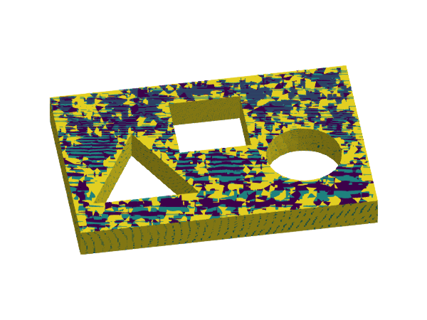

p-Laplacian

Problem statement
Find the scalar-field $u$ such that
\[\left\lbrace \begin{aligned} -\nabla \cdot \sigma(u) = f\ &\text{in}\ \Omega,\\ u = -1 \ &\text{on} \ \Gamma_0,\\ u = 1 \ &\text{on} \ \Gamma_1,\\ \sigma(u)\cdot n = 0 \ &\text{elsewhere on} \ \partial\Omega, \end{aligned} \right.\]
with $\sigma(u) = |\nabla u|^{p-2} \ \nabla u$ and $p>2$. The vector field $n$ is the outwards unit normal vector to $\partial\Omega$. The computational domains are defined in the mesh file model.msh. The domain $\Omega$ is represented by the 3D faces in this mesh. The domain $\Gamma_0$ is represented by the physical group named "sides" and $\Gamma_1$ is the union of the physical groups named "circle", "triangle", and "square".
Numerical scheme
We discretize the problem with a space $V$ with piece-wise continuous Lagrangian basis functions. For this formulation, the nonlinear weak form reads: find $u\in V_g$ such that $[r(u)](v) = 0$ for all $v\in V_0$. The auxiliary spaces $V_g$ and $V_0$ are the subsets of $V$ that fulfill the Dirichlet boundary condition $g$ and $0$ on $\partial\Omega$ respectively.
The weak residual $r(u)$ evaluated at a function $u\in V_g$ is the linear form defined as
\[[r(u)](v) \doteq \int_\Omega \nabla v \cdot \left( |\nabla u|^{p-2}\ \nabla u \right) \ {\rm d}\Omega - \int_\Omega v\ f \ {\rm d}\Omega.\]
In order to solve this nonlinear weak equation, we consider a Newton-Raphson method, which is associated with a linearization of the problem in an arbitrary direction $\delta u\in V_0$, namely $[r(u+\delta u)](v)\approx [r(u)](v) + [j(u)](\delta u,v)$. In previous formula, $j(u)$ is the Jacobian evaluated at $u\in V_g$, which is the bilinear form
\[[j(u)](\delta u,v) = \int_\Omega \nabla v \cdot \left( |\nabla u|^{p-2}\ \nabla \delta u \right) \ {\rm d}\Omega + (p-2) \int_\Omega \nabla v \cdot \left( |\nabla u|^{p-4} (\nabla u \cdot \nabla \delta u) \nabla u \right) \ {\rm d}\Omega.\]
Implementation
using LinearAlgebra
import GalerkinToolkit as GT
import PartitionedSolvers as PS
import NonlinearSolve
import ForwardDiff
import GLMakie as Makie
#Read and visualize the mesh
assets_dir = normpath(joinpath(@__DIR__,"..","..","..","assets"))
msh_file = joinpath(assets_dir,"model.msh")
mesh = GT.mesh_from_msh(msh_file)
#Define domains
dirichlet_0_names = ["sides"]
dirichlet_1_names = ["circle", "triangle", "square"]
Ω = GT.interior(mesh)
Γ0 = GT.boundary(mesh;group_names=dirichlet_0_names)
Γ1 = GT.boundary(mesh;group_names=dirichlet_1_names)
Γd = GT.piecewise_domain(Γ0,Γ1)
#Define forcing data
g0 = GT.analytical_field(x->-1.0,Ω)
g1 = GT.analytical_field(x->1.0,Ω)
g = GT.piecewise_field(g0,g1)
#Define the interpolation space
k = 1
V = GT.lagrange_space(Ω,k;dirichlet_boundary=Γd)
#Interpolate Dirichlet values
T = Float64
uh = GT.rand_field(T,V)
GT.interpolate_dirichlet!(g,uh)
#Define numerical integration
degree = 2*k
dΩ = GT.measure(Ω,degree)
#Define weak form.
∇ = ForwardDiff.gradient
q = 3
flux(∇u) = norm(∇u)^(q-2) * ∇u
dflux(∇du,∇u) = (q-2)*norm(∇u)^(q-4)*(∇u⋅∇du)*∇u+norm(∇u)^(q-2)*∇du
r = u -> v -> GT.∫( x-> ∇(v,x)⋅GT.call(flux,∇(u,x)), dΩ)
j = u -> (du,v) -> GT.∫( x-> ∇(v,x)⋅GT.call(dflux,∇(du,x),∇(u,x)) , dΩ)
#Define non-linear problem
p = GT.SciMLBase_NonlinearProblem(uh,r,j)
#Solve it
sol = NonlinearSolve.solve(p;show_trace=Val(true))
@assert sol.retcode == NonlinearSolve.ReturnCode.Success
#Get the FE solution object
uh = GT.solution_field(uh,sol)
#Visualize the solution
fig = Makie.Figure()
elevation = 0.24π
azimuth = -0.55π
aspect = :data
ax = Makie.Axis3(fig[1,1];aspect,elevation,azimuth)
Makie.hidespines!(ax)
Makie.hidedecorations!(ax)
GT.makie_surfaces!(Ω;color=uh)
Algorithm: NewtonRaphson(
descent = NewtonDescent(),
autodiff = AutoForwardDiff(),
vjp_autodiff = AutoFiniteDiff(
fdtype = Val{:forward}(),
fdjtype = Val{:forward}(),
fdhtype = Val{:hcentral}(),
dir = true
),
jvp_autodiff = AutoForwardDiff(),
concrete_jac = Val{false}()
)
---- ------------- -----------
Iter f(u) inf-norm Step 2-norm
---- ------------- -----------
0 1.26741773e+01 NaN
1 3.16956871e+00 1.68649496e+01
2 7.94390709e-01 7.85563564e+00
3 2.03848687e-01 3.09654159e+00
4 4.59173779e-02 9.93443285e-01
5 9.39525425e-03 2.58066948e-01
6 9.88113637e-04 6.33236015e-02
7 5.79487533e-05 1.34494411e-02
8 2.46449999e-06 1.85749018e-03
9 5.69980683e-09 7.42637557e-05
10 3.10992280e-14 1.36012244e-07
Final 3.10992280e-14
----------------------Building the algebraic non-linear problem explicitly
In this other version, we explicitly build the algebraic residual and Jacobian (functions that take plain Julia vectors) and build a algebraic non-linear problem from them.
import SciMLBase
#Initial guess
x = rand(T,GT.num_free_dofs(V))
GT.solution_field!(uh,x)
#Initial residual and Jacobian
reuse = Val(true)
parameters = (uh,)
b,residual_cache = GT.assemble_vector(r(uh),T,V;parameters,reuse)
A,jacobian_cache = GT.assemble_matrix(j(uh),T,V,V;parameters,reuse)
#Algebraic residual and Jacobian functions
function f(dx,x,p)
GT.solution_field!(uh,x)
GT.update_vector!(dx,residual_cache;parameters)
dx
end
function jac(J,x,p)
GT.solution_field!(uh,x)
GT.update_matrix!(J,jacobian_cache;parameters)
J
end
#Build the nonlinear problem
jac_prototype = A
nlfun = SciMLBase.NonlinearFunction(f;jac,jac_prototype)
p = SciMLBase.NonlinearProblem(nlfun,x)
#Solve it
sol = NonlinearSolve.solve(p;show_trace=Val(true))
@assert sol.retcode == NonlinearSolve.ReturnCode.Success
#Get the FE solution object
x = sol.u
GT.solution_field!(uh,x)
#Visualize the solution
fig = Makie.Figure()
elevation = 0.24π
azimuth = -0.55π
aspect = :data
ax = Makie.Axis3(fig[1,1];aspect,elevation,azimuth)
Makie.hidespines!(ax)
Makie.hidedecorations!(ax)
GT.makie_surfaces!(Ω;color=uh)
Algorithm: NewtonRaphson(
descent = NewtonDescent(),
autodiff = AutoForwardDiff(),
vjp_autodiff = AutoFiniteDiff(
fdtype = Val{:forward}(),
fdjtype = Val{:forward}(),
fdhtype = Val{:hcentral}(),
dir = true
),
jvp_autodiff = AutoForwardDiff(),
concrete_jac = Val{false}()
)
---- ------------- -----------
Iter f(u) inf-norm Step 2-norm
---- ------------- -----------
0 1.29104525e+01 NaN
1 3.35025824e+00 1.67371952e+01
2 8.67395735e-01 7.74603729e+00
3 2.02873598e-01 3.06983236e+00
4 3.50526828e-02 9.93663070e-01
5 8.72405101e-03 2.56891191e-01
6 1.09582966e-03 5.80803613e-02
7 2.43004996e-04 1.26802241e-02
8 4.24907762e-06 2.72246528e-03
9 1.78089476e-09 7.46656900e-05
10 1.37196976e-15 4.95161196e-08
Final 1.37196976e-15
----------------------This page was generated using Literate.jl.